Publication · Materials · 2025
Structure–Property Linkage in Alloys Using Graph Neural Network and Explainable Artificial Intelligence
Materials 18(16), 3778 · DOI: 10.3390/ma18163778
Full text below follows the supplied April 2026 Word manuscript. The journal article is the version of record.
Abstract
Deep learning-based machine learning tools have recently shown significant potential to accelerate the prediction of microstructure evolution. While deep neural networks like convolution neural networks (CNN) can extract information from 3-D microstructure images, they often require a large network architecture and substantial training time. In this research, we trained a graph neural network (GNN) with phase-field generated microstructures of Ni-Al alloys to predict the evolution of mechanical properties. We found that a single GNN is capable of accurately predicting the strengthening of NiAl graphs from microstructures of varying sizes and dimensions, which cannot otherwise be done with a CNN. Additionally, GNN requires significantly less GPU utilization than CNN and offers more interpretable explanation of predictions using saliency analysis by manually defining features in the graph. Overall, our work demonstrates the ability of the GNN to accurately and efficiently extract relevant information from materials microstructures without having restrictions on data resolution or dimension and offers an interpretable explanation.
Introduction
The evolution of microstructures provides valuable information about the processing-microstructure-properties (PMP) relationship of common processes in materials science like casting, grain growth, and crystal growth [1]. A common phenomenon during microstructure evolution, known as precipitate coarsening, significantly affects the strength of a material, and can be modeled using thermodynamics and kinetics principles in a phase-field (PF) model [2]. PF simulations can solve for the microstructure of alloys like NiAl [3] by solving computationally expensive differential equations, from which the coarsening can be observed and used to calculate the change in strength. While equations can be used to solve for the precipitate strengthening [4], machine learning (ML) tools can also be used to predict the strengthening of the microstructure, demonstrating their ability to process materials data accurately and rapidly.
There are two common approaches to predicting material properties with artificial intelligence (AI); the first is to use explicitly defined or extracted dataset features [5], like elemental properties and electronic and ionic attributes, to predict material properties like band gap energy. This typically involves ML tools like linear regression (LR), extra trees (ET) [6], and many others [7]. The second approach is to use high-dimensional data like 2D or 3D images, or continuous spectral measurements [8], which often require the use of deep learning (DL) tools like a convolutional neural network (CNN). This approach has commonly been used to predict material properties of simulated microstructures and experimental micrographs [9]. The primary difference between these two approaches is that the feature statistics-based method has simpler, but more interpretable models, while DL models are much more complex, but less interpretable. For example, a CNN, which is often thought of as a ‘black box,’ can achieve very high accuracy, but it is difficult to explain why it makes such predictions [10]. In contrast, there are several ways to understand why ML tools make certain predictions. For feature statistics methods, while domain knowledge is required to know which features to extract, the model can be explained more intuitively in terms of those features. For example, feature importance studies can be performed with models like support vector machines (SVM) and neural networks (NN) [11]. Overall, choosing an approach depends on the complexity of the data and the accuracy desired; therefore, an ML model is needed that can make predictions of high-dimensional data with high accuracy, as well as effectively explain such predictions.
There is currently a large effort to reduce the computational requirements of CNNs and expedite the training process [12, 13]. Instead of using such high-dimensional networks like a CNN, training a different type of neural network may be less expensive for many who do not have access to high-quality GPUs. This would provide more access to the community in the ML field to process their data and develop high-fidelity models from it.
In this research, we demonstrate the utility of a graph neural network (GNN) as an alternative approach to provide an alternative explanation of predictions and to reduce required GPU resources in comparison to CNNs. GNNs process graphs, which is a data structure made of individual nodes with different features, and edges representing the relationships between nodes [14]. This GNN will be used to predict the strengthening of PF-generated NiAl microstructures by representing high-dimensional microstructure as graphs with interpretable features. GNNs have been used with great success in materials applications [15], such as coarse graining molecular systems to expedite molecular dynamics simulations [16]. Polycrystalline microstructures were converted into graphs and used by a GNN to predict the magnetostriction of the material with about 10% error [17]. Additionally, integrated gradient analysis was used to determine the features in the microstructure grains that were most important in predicting magnetostriction.
In this work, we will create a graph dataset from PF-generated microstructures of NiAl by assigning a node to each precipitate in the microstructure and train a GNN to predict the strengthening due to coarsening. We will demonstrate equivalent/superior accuracy of the GNN compared to feature statistics-based models and a high-dimensional-based CNN. Further, we will demonstrate superior generalizability with the GNN through the use of train and test datasets with graphs that were constructed from microstructures of different sizes and dimensions. Then, we will show the reduction in computational resources required to train and test the GPU compared to the CNN.
We will also use saliency analysis (SA), an explainable AI feature importance (FI) method which has been used with CNNs to show the regions that had the most influence on the prediction [18]. However, when used with a GNN, we can use FI to find the importance of each node feature in making predictions, which can help us understand the physics governing material evolution. In some applications, using FI with GNNs has not produced ideal results [19]; however, in this work we demonstrate the ability of FI to accurately determine the most important features, and show that using FI with a GNN in this study yields more interpretable results than when used with a CNN.
Last, using just the extracted precipitate size of the microstructure during the evolution, we will use Bayesian inference (BI) to confirm the power law equation governing the growth of precipitates during coarsening. BI uses Bayes’ theory to estimate the coefficients of terms in an equation and their uncertainties, [20] and has been used in many ways, like parameter estimation for physics models [21]. By confirming the coefficients determined from BI match the known coefficients, we can confirm the accuracy of our PF data.
Overall, we demonstrate superior accuracy and generalizability while enabling unique insights with explainable AI through the use of a GNN. In addition, our proposed method uses fewer resources and can be run without access to expensive GPUs. This can make it easier to develop property prediction models of materials microstructures for materials scientists with less computational resources.
Methods
In this work, we utilize a GNN with a PF-generated dataset of NiAl microstructures converted into a graph dataset to predict the strengthening from precipitate coarsening. Also, we use FI to find the features most important in the strengthening and BI to fit the precipitate growth to a power law equation. Finally, we compare the performance and speed of the GNN to state-of-the-art ML tools and a CNN. These methods are conducted to showcase the benefits of using a GNN for materials microstructure regression compared to other ML tools.
2.1. Dataset Generation
A dataset of 2D and 3D NiAl microstructures of different sizes is created with PF and then each microstructure is converted into a graph. This graph dataset is the primary dataset used for training and testing the GNN in this study, and the generation of this dataset is outlined in this section.
Phase-Field Generation of NiAl
Microstructures of NiAl were generated with a phase-field model governed by Cahn-Hilliard kinetic Equations 1 and 2 [3, 22, 23]:
c is concentration of Al, ϕ is the order parameter, F is the total free energy, f is the free energy density, t is time, M is diffusion mobility, and L is a kinetic coefficient for order parameter relaxation. Further details regarding this model can be found in [3]. This PF model was simulated for a steady-state cooling temperature of 1273 K, and an initial Al concentration of 17.7%. 5 21-image sequences were generated, each of which represented 0.8 seconds of NiAl coarsening. Figure 2.1 shows 4 of the timesteps from one of the sequences simulated with this model and used during this study. The microstructure at timestep 0 is when nucleation is still taking place.
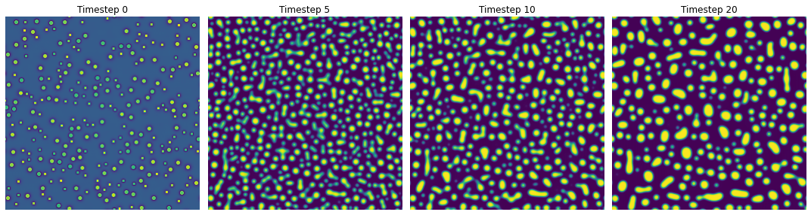
Graph Construction
A microstructure is converted into a graph by assigning each precipitate to a node. Each node has a number of features that describe that precipitate, and this collection of node features is called the feature matrix, f. Additionally, interactions or relationship between nodes are represented by edges, and are stored in the edge/adjacency matrix, e. In this study, we define 6 features for each precipitate: size, x, y, and z position of centroid, equivalent cube length, and extent. The size is equal to the product of the number of pixels and the area or volume of each pixel, depending on whether the microstructures are 2D or 3D. The x, y, and z centroid positions are normalized by dividing them by the total number of pixels in the microstructure in that direction. The equivalent cube length is calculated by taking the square root of the size (for 2D microstructures) or the cubic root of the size (for 3D microstructures), and the extent is calculated by dividing the size by the area or volume of the bounding box of the precipitate. We also define the edges between two nodes as the reciprocal of the distance between the centroid of the two corresponding precipitates. Only precipitates whose centroids are within 62 pixels of each other are given an edge value, which may include non-immediate neighbors. We tested distances of 42, 62, and 82 and found no difference in the performance of the GNN based on this parameter. Figure 2.2 shows a summary of the image-to-graph conversion. We use Python package StellarGraph for building the graphs and MPL, and TensorFlow for the rest of the GNN operations.
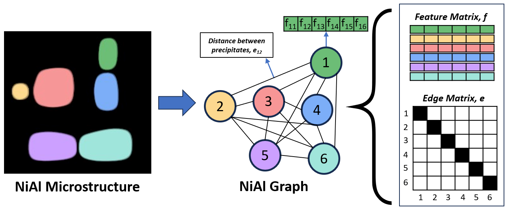
Dataset Configurations
We build 5 graph datasets, each with 105 graphs constructed from 5 21-microstructure sequences of NiAl, where each sequence starts with a different random initialization of noise. Three graph datasets are made using 2D microstructures with sizes of 128x128, 256x256, and 512x512, and will be referred to in this paper as 2D-128, 2D-256, and 2D-512, respectively. The other two graph datasets are made using 3D microstructures with sizes of 64x64x64 and 128x128x128 and will be referred to in this paper as 3D-64 and 3D-128, respectively.
For each microstructure in these datasets, we calculate the strengthening of the microstructure using Equation 3:
Where ∆G is the shear modulus difference between the matrix and precipitate (42.8 GPa), m=0.85, M=3.06, G is the shear modulus of Al (26.2 GPa), and b is the interatomic distance in slip direction of Al, which is 2.863 Å. f is the area fraction and r is the average cube length and are both calculated using a python script.
After calculating the strengthening of each microstructure in the dataset, we sort them in order of increasing strengthening, and then put every fifth microstructure in the test set and keep the rest in the training set. We do this five times, offsetting the test data by one each time, resulting in five folds, each with an evenly distributed training set of 84 microstructures and a test set of 21 microstructures, allowing us to make consistent comparisons of model performances.
Graph Neural Network (GNN)
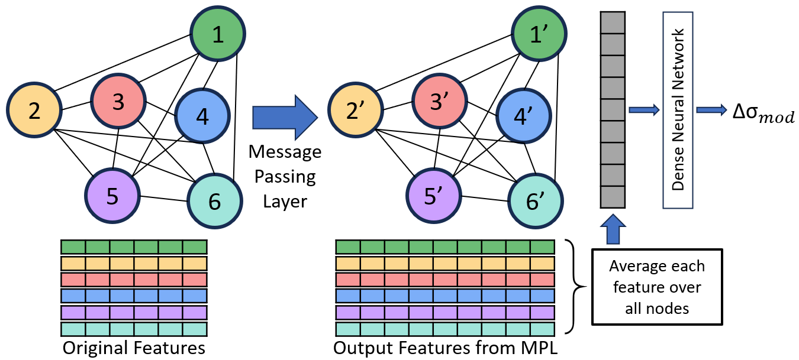
We build a commonly used regression graph neural network that implements message-passing layers (MPL), averages the features over all nodes, and then uses a dense neural network to predict the strengthening, as shown in Figure 2.3 (additional description of GNN in supplementary material). This In the MPL, information from features is passed between connected nodes and aggregated, which allows information from neighboring nodes to be included in the updated features [24]. The next step returns the average value of each feature over all nodes, and then inputs these average feature values into the dense neural network. This contrasts with recent GNNs that predict properties from microstructures, which concatenate the features of each node after the last MPL before being fed into the dense neural network [17], restricting all the graph datasets to have the same number of nodes. By taking the average feature values over all nodes, our GNN architecture makes it possible to train and test on graphs with any number of nodes. This means the graphs in the dataset can be constructed from microstructures of any size or dimension, thus making this GNN significantly more generalizable than previous models.
GNN Parameters and Architecture Optimization
In this study, we define five GNN architectures with varying complexity to determine the model with a complexity most appropriate for our dataset's complexity, which will optimize the performance of our GNN. We show the size of each MPL and dense neural network layer in these GNNs in Table 1. In this study, we use dropout of 0.2 in each MPL, ReLU activation in each MPL and dense layer, and a learning rate of 0.001 with the Adam optimizer. The learning rate and dropout had little impact on the GNN performance, and the ReLU activation function was used for its efficiency. We initialize the model weights with random Xavier distributions and use mean absolute error (MAE) loss function between the true and predicted strengthening. Each model in Table 1 is trained until the test MAE does not improve for 150 epochs is relatively close to the train MAE. Using the 2D-256 dataset with the 80-20 train-test split described in section 2.1.3, we repeat 5-fold cross validation 5 times for a total of 25 comparisons for all GNN architectures. We determine the ranks of each GNN’s minimum test MAE over all 25 tests and use the architecture that achieves the best average rank for the remainder of the study.
| GNN Model Number | Message Passing Layer Sizes | Dense Neural Network Layer Sizes | Number of Trainable Parameters in Model |
|---|---|---|---|
| 1 | [32, 32] | [16, 1] | 1,825 |
| 2 | [32, 32, 32] | [8, 4, 1] | 2,641 |
| 3 | [128, 64, 32] | [32, 16, 8, 1] | 12,961 |
| 4 | [128, 256, 512] | [256, 128, 32, 1] | 33,389 |
| 5 | [256, 256, 256] | [256, 256, 256, 1] | 331,009 |
| 6 | [256, 512, 512] | [512, 256, 64, 1] | 806,529 |
| 7 | [256, 512, 1024] | [1024, 256, 64, 1] | 1,987,201 |
| 8 | [512, 1024, 2048] | [1024, 512, 32, 1] | 5,267,521 |
| 9 | [512, 1024, 2048] | [2048, 1024, 64, 1] | 8,988,289 |
| 10 | [1024, 2048, 4096] | [4096, 2048, 1024, 1] | 37,770,241 |
Feature Importance
Using the optimized graph construction method and GNN, we perform FI to determine which of the 6 manually defined features (size, x, y, and z position of centroid, equivalent cube length, and extent) are most important in the prediction of the strengthening. The FI was performed by taking the gradient of the GNN strengthening prediction with respect to each feature in each node to obtain the importance score of each feature of each node. Then we added all the individual importance scores for each feature across all nodes to determine a cumulative importance score of each feature. By comparing this to the variables present in the strengthening equation (Equation 1), we can determine if the GNN is paying attention to the proper features.
GNN Performance
To demonstrate the robustness of the GNN, we analyze the ability of the GNN to make predictions on graph datasets that are created from microstructures of different dimensions and sizes. We train and test our GNN on the 2D-128, 2D-256, 2D-512, 3D-64, and 3D-128 datasets, using the train-test configuration described in section 2.1.3, and report the average test MAE of all 25 runs. We also test different configurations of the five datasets above, where we train on one or more of the whole dataset and test on one or more of the other dataset and we measure the average test MAE. In these cases, there is only one train-test fold, but we still train and test on this fold 5 times and take the average MAE from the 5 runs. A condensed description of the individual datasets and how they are used throughout this study are listed in the supplementary material. These results will show how accurate the strengthening predictions are when training on one dataset and testing on a different graph dataset which is constructed from microstructures of different sizes and/or resolutions than the training dataset.
Comparison to other Models
We then compare our GNN to other state-of-the-art ML tools to understand the differences between the approaches, to provide insight on the types of applications GNNs are best suited for. We extract the average equivalent cube length, area fraction, and average extent from our 2D-256 and 3D-128 datasets, and predict the strengthening using AutoGluon [25] as a baseline. We also train a 2D and 3D CNN to predict the strengthening given the images of 2D-256 and 3D-128 datasets, respectively. We test multiple CNN architectures, which are shown in Table 2, to find the one that performs best for each dataset and use these in our final comparisons. All MAEs reported are the average of 25 runs from repeating 5-fold cross-validation 5 times.
We increased the complexity of the 3D CNN architectures until the Nvidia Tesla A100 40GB GPU we used did not have enough memory to train and test the model. Therefore, the comparisons between the GNN and CNN are for models which have similar memory requirements.
| 2D Dataset, 256x256 | 2D Dataset, 256x256 | 2D Dataset, 256x256 | 3D Dataset, 128x128x128 | 3D Dataset, 128x128x128 | 3D Dataset, 128x128x128 |
|---|---|---|---|---|---|
| 2D Convolution Layer Filter Sizes | Dense Layer Sizes | MAE | 3D Convolution Layer Filter Sizes | Dense Neural Network Layer Sizes | MAE |
| [16,16,16,16] | [1] | 1.1e-2 | [32,32,32,32] | [1] | 1.2e-2 |
| [32,32,32,32] | [1] | 1.0e-2 | [32,32,64,64] | [1] | 1.6e-2 |
| [64,64,64,64] | [1] | 9.1e-3 | [32,32,32,32] | [64,1] | 1.5e-2 |
| [128,128,128,128] | [1] | 8.7e-3 | [32,32,32,32] | [64,32,1] | 1.0e-2 |
| [128,128,128,128] | [128,1] | 1.0e-2 | [32,32,32,32] | [32,1] | 1.1e-2 |
| [256,256,256,256] | [1] | 7.1e-3 | [48,48,48,48] | [1] | 1.1e-2 |
| [256,256,256,256] | [256,1] | 8.1e-3 | [48,48,48,48] | [64,32,1] | 1.3e-2 |
| [512,512,512,512] | [1] | 1.3e-2 | [32,32,32,32,32] | [1] | 1.6e-2 |
| [32,32,32,32,32] | [1] | 1.2e-2 | [32,32,32,32,32] | [32,1] | 1.5e-2 |
| [64,64,64,64,64] | [1] | 1.1e-2 | [32,32,32,32,32] | [64,1] | 1.1e-2 |
| [128,128,128,128,128] | [1] | 8.1e-3 | [32,32,32,32,32] | [64,32,1] | 8.9e-3 |
| [128,128,128,128,128] | [128,1] | 8.8e-3 | [48,48,48,48,48] | [1] | 1.4e-2 |
| [256,256,256,256,256] | [1] | 1.3e-2 | [48,48,48,48,48] | [64,32] | 1.5e-2 |
| [256,256,256,256,256] | [256,1] | 1.1e-2 | |||
| [512,512,512,512,512] | [1] | 1.6e-2 | |||
| [128,128,256,256,512] | [256,1] | 1.5e-2 | |||
| [64,64,64,64,64,64] | [1] | 1.1e-2 | |||
| [128,128,128,128,128,128] | [1] | 1.0e-2 | |||
| [128,128,128,128,128,128] | [128,1] | 9.6e-3 | |||
| [256,256,256,256,256,256] | [1] | 1.0e-2 | |||
| [512,512,512,512,512,512] | [1] | 1.5e-2 | |||
| [128,128,256,256,512,512] | [256,1] | 9.2e-3 |
We significantly reduce the size of the data when we construct graphs from images, and we even further reduce the data when we extract the average equivalent cube length, area fraction, and average extent for use with XGB, KNN, and ET. Therefore, by comparing each model's performance with the different data structure, we will understand how various measures of data complexity can impact the performance of their predictive models.
Bayesian Inference for Power Law Equation
The final component of this study will be to extract the coefficients of the power law equation governing precipitate growth in coarsening alloys [26]:
Where rt is the equivalent cube length at time t, r0 is the equivalent cube length when coarsening starts, k is the coarsening rate constant, and n is equal to 3. We utilize BI, which uses Bayes’ theorem to update prior distributions for given coefficients to find the most likely coefficients [27]. Using BI, we determine the most likely values of n and k for data generated with this phase field model. For this data, we use NiAl microstructures generated with the same phase field parameters as before, but extend the real simulation time to 120 seconds, recording the average equivalent cube length every 0.4 seconds. This part of the study shows that our data is reliable, which we use throughout this report.
Results
In this study, we use FI to determine the most important node features in the prediction of the strengthening. Then, we optimize the graph dataset and GNN, and we compare the optimized GNN to state-of-the-art ML tools and CNNs. Additionally, we use BI to find the distribution of coefficients to the power law equation governing the precipitate growth. These results will provide insight to materials scientists on the benefits of using a GNN for property prediction of material microstructure evolution.
3.1. Node Feature Importance
We used FI to quantify the importance of each of the six node features in the prediction of the strengthening, which is shown in Figure 3.1a. This approach was used to gain physical understanding of the main features involved in the evolution of the microstructure. We compare these results to using FI with an optimized CNN in Figure 3.1b, where the red spots show pixels that have the most importance in predicting strengthening.
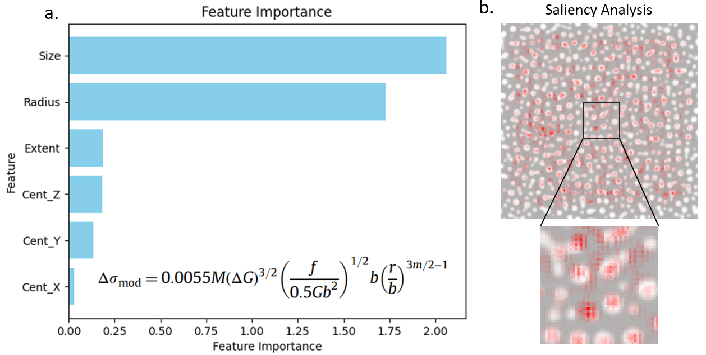
The accuracy of this form of explainable AI with the GNN was verified because the two features with the highest importance were the size and radius, which are the two independent variables in the strengthening equation. The x, y, and z position of the centroid and the extent are not in the strengthening equation, which agrees with the low importance values obtained from FI. In contrast, there is very little insight that can be obtained from FI with the CNN. Some precipitates and some of the matrix are considered important, with no recognizable pattern, and no features described. Additionally, because the CNN FI does not provide a meaningful explanation, there is much less confidence in its ability to generalize, while the GNN will be much more likely to do so because the explanations agree with our physical understanding. Overall, our results show that using FI with a GNN provides a different type of explanation than a CNN and suggests that the GNN is more capable of generalizing than the CNN.
FI was also used to determine the importance of node edges (interaction between precipitates) and nodes (individual precipitates). In both cases, there was no clear trend in the importance values, which also agreed with our current understanding that individual precipitates as well as precipitate-precipitate interactions have a negligible influence strengthening.
3.2. GNN Optimization
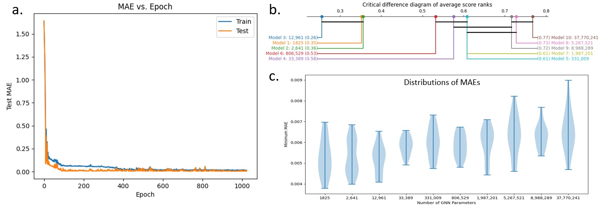
Next, we optimize the architecture of the GNN to minimize the error in its predictions to ensure confidence in our comparisons and conclusions. First, we present an example loss curve during training of a GNN in Figure 3.2a to show that our models are training and testing well. Next, we varied the number of parameters in the GNN by changing the number of units in the graph convolution and dense layers as already shown in Table 1. We repeat 5-fold cross validation 5 times for each of these GNN architectures and show the distribution of the minimum test MAE over all 25 runs for each GNN in Figure 3.2c. We then plot the average rank score of each distribution in Figure 3.2b, as well as a black line connecting the models which have average ranks within one critical difference of each other. This plot shows that models 1, 2, and 3 performed better than models 4 and 5, but we cannot statistically state whether model 1, 2, or 3 performs best. However, because model 3 had the lowest average rank, we continue the rest of this study using the architecture of GNN model 3, which has 12,961 trainable parameters. These results suggest that the complexity of model 3 is the most appropriate for the size and complexity of the graphs used in this study. We expect that more complicated graphs would require larger GNNs and simpler graphs would require smaller GNNs.
3.3. GNN Performance with Different Dimensions and Sizes
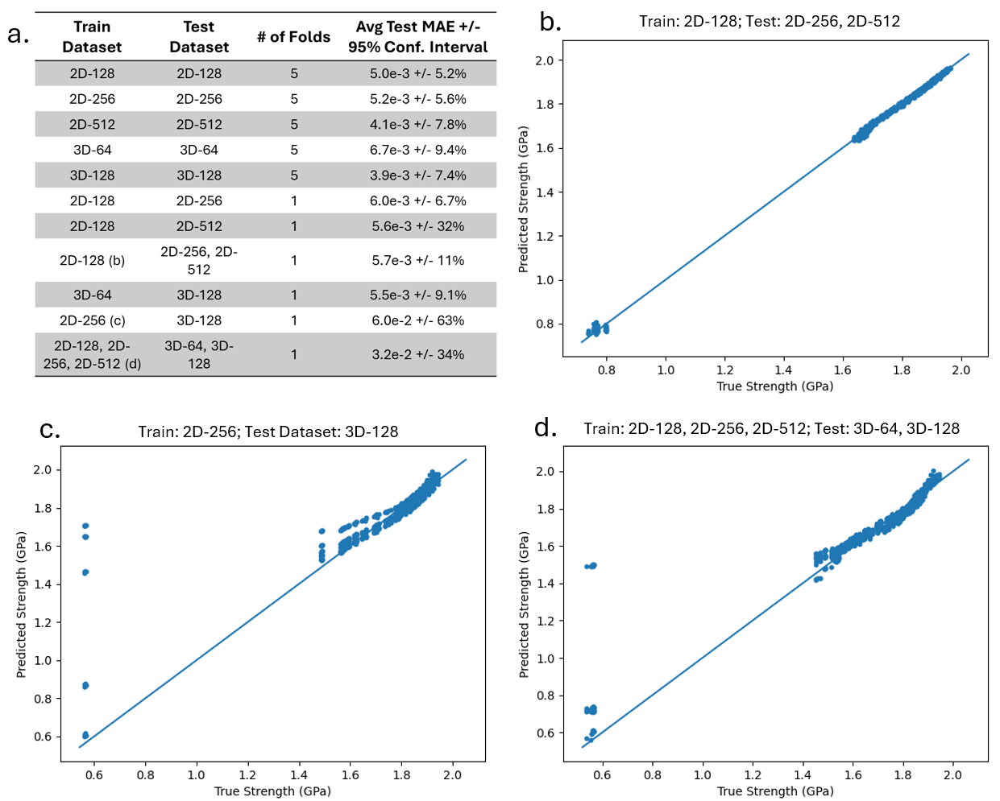
After optimizing our GNN, we tested its performance on multiple configurations of graph datasets constructed from both 2D and 3D microstructures. We did this to show the superior compatibility of GNNs with data from microstructures of various structures compared to CNNs. In figure 3.3a, we list the train and test dataset used, the number of folds used, and the average test MAE. Each fold is repeated five times with different random weight initializations. Figures 3.3b-d show the true-predict plot of the test data for three configurations shown in the table in Figure 3.3a.
Figure 3.3b shows the true-predict plot of the test graphs, which were constructed from microstructures of size 256x256 and 512x512, after training the GNN on graphs constructed from 128x128 microstructures. The GNN achieved a similar MAE to those obtained for the GNNs that were trained and tested on graph datasets all made from the same size microstructure, which shows that the GNN can successfully be trained on graphs from one microstructure size and can be used on graphs from bigger microstructures with minimal reduction in performance. However, we observe an increase in the average error and confidence interval for these cases, which shows that there is some inconsistency in the graph data constructed from 2D and 3D microstructures. We also note the smaller strengthening predictions are less accurate than the higher predictions, which is likely because there is a lot less data available at these smaller strengthening values.
Figures 3.3c and 3.3d show the results from extrapolating dimension of the microstructures. In 3.3c the train data was constructed from 2D-256 microstructures, while the test data was constructed from 3D-128 microstructures. Figure 3.3d is a similar configuration, except all 2D datasets (2D-128, 2D-256, 2D-512) and 3D datasets (3D-64, 3D-128) were used in the train and test dataset, respectively. It is observed in both cases that there is a small difference in the information present in the graphs from 2D vs 3D microstructures, resulting in the increased MAE. This difference in information is most likely because the size feature represents the area for a 2D microstructure, but the volume for a 3D microstructure. While both measurements still capture the overall size of the precipitate, the area of the 2D microstructure is less accurate, and therefore may contain more noise, causing the worse performance when extrapolating dimensions. It is possible that adding additional data will help to close this information gap and provide enough physics information for the GNN to extrapolate from 2D to 3D without increasing error. Nevertheless, these results demonstrate the advantage of the GNN over the CNN, which is its ability to be trained and tested on graphs processed from multiple dimensions and sizes and still make accurate predictions.
It is also worth noting that in Figures 3.3c and 3.3d there is significant error in some of the predictions of the smaller strengthening values. This occurs when training is stopped early after the test loss has not improved after 150 epochs. We observe that this happens based on the random weight initialization. In Appendix B, we show in Figure A1 the five MSE vs. Epoch curves associated with the results in Figure 3.3c, and observe that one of the models was stopped too early, resulting in poor performance. To fix this issue, one could increase the patience, but that would increase the train time for all models. One could also train the model until the MSE falls below a threshold; however, this threshold may be difficult to determine. For simplicity, we do not change the patience for any of our tests to show an accurate comparison of all models.
3.4. Comparison of GNN with ML Tools and CNN
To study the prediction capabilities of the GNN in the context of other ML tools, we compare the performance of the GNN to a CNN and other models like XGBoost, ET, and KNN, tested using AutoGluon. We run our GNN and CNN on the 2D-256 and 3D-128 dataset, repeating 5-fold cross-validation 5 times, and record the average test MAE of all 25 runs in Figure 3.4a. We use AutoGluon on the tabular data with 5-fold cross validation, but with no repetitions, and present the average MAE and confidence interval in Figure 3.4a as well. Additionally, for the GNN and CNN, we present in Figure 3.4b the size of each model (number of model parameters), the average seconds per epoch during training, the average total train time, the average GPU utilization, and the average total GPU train time (total train time multiplied by GPU utilization). We plot the MAE vs. GPU train time in Figure 3.4c to visually compare the GNN and CNN on the two different datasets, where the GPU is an NVIDIA A100 40GB GPU. In this figure, the best models are those that are furthest to the bottom left.
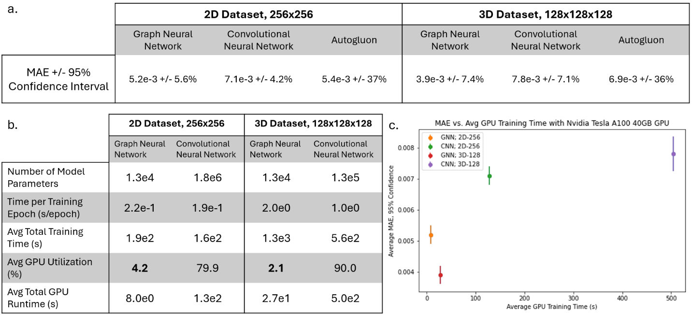
We observe that the GNN model has fewer trainable parameters than the 2D CNN and 3D CNN. We also see that the GNN is comparable to ML models and CNNs, and while they take more overall time to train, they require significantly less computational time on a GPU than CNNs. We also measure the GPU utilization time using an NVIDIA V100 GPU as well as using 48 Xeon Platinum 8268 CPUs and show the GPU/CPU utilization time vs. performance in Figures A2 and A3 in Appendix C. Overall, we observe that the GNN operations do not efficiently utilize GPUs like CNNs, which are very well-suited for GPUs [28]. Further, we found that when both run on CPUs, the GNN takes significantly less time to train than the CNN, as shown in Figure A3 of Appendix C. This is because the data and model size of the graph dataset and GNN are much smaller than the image dataset and CNN. We are not aware of any efforts to more efficiently train GNNs with GPUs; therefore, this may be a potential area of research. However, because the graph data and GNN models are smaller than image datasets and the CNN model, those with no access to GPUs can train a GNN much faster than a CNN on their GPUs.
3.5. Determining Power Law Coefficients using Bayesian Inference
Last, we confirm the reliability of our PF-generated NiAl microstructures by extracting the average precipitate size from the 2D-256 microstructures and use BI with the features alone to find the coefficients n and k of Equation 1. From BI, we estimate that n=2.992 and k=3300 nmn /s, with the other possible values lying in the distribution shown in Figure 3.5c. Figures 3.5a and 3.5d show the distribution of possible values for n and k, respectively, and Figure 6b plots the fitted equation, which agrees with the data.
With these results, we confirm that n=3 in the power law equation, and we solved for the coarsening rate constant, k. These results from BI make it possible to visualize the dependence of k on n, as seen in 3.5c The possible value of k is a narrow distribution, and changes significantly for a small change in n.
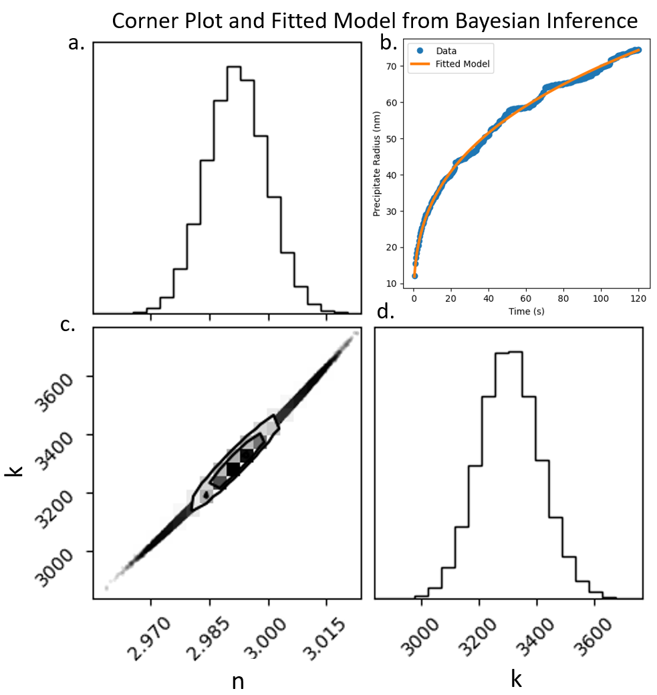
Discussion
The results from this study have many promising implications for materials science. The first result is the success of FI in calculating the importance of features for predicting the strengthening, which was confirmed by our knowledge of the equation used to calculate the strengthening. FI was also applied to find importances of the whole precipitates and the edges between them. While there was no trend in these results because the strengthening is not dependent on the interactions or any individual precipitate, we could use the same tool with other graph datasets to determine the features, nodes, and interactions of nodes that have the most importance for making predictions. For example, in grain growth [29], the evolution of grains depends on nearby features, like other grains or different types of grain boundaries. Tools like physics-regularized interpretable machine learning (PRIMME) [30], as well as using FI with a CNN, can give heat maps showing the importance pixels within microstructures; however, using FI with a GNN can provide more specific importance scores of microstructure components (graph nodes), their features, and the interactions between components (graph edges). Therefore, this process has potential to increase understanding of the physics principles governing the properties and evolution of microstructures of which we currently have little understanding.
Another observation we made during this study was the difference in computational resources during training, which is a function of the complexity of the GNN compared to the CNN as well as the efficiency of each model on a GPU. Because the NiAl microstructures had very simple precipitates, there was a relatively small amount of data needed to fully describe each microstructure with a graph. Because of this, the optimized GNN architecture only had 12,961 trainable parameters, which was a fraction of the parameters needed in the 2D and 3D CNNs. However, we expect if a more complicated microstructure than NiAl is used, the complexity of the graph and the GNN would both increase causing the computational requirements of the GNN to approach and possibly surpass that of the image data and CNN. A similar trend would follow in the other direction if the microstructure were simpler than those we used in this study. This idea can be further studied to understand the degree to which GNN and graph complexity is dependent on microstructure complexity, and can be a major factor in determining whether a GNN is the best option for microstructure-based predictions.
The final benefit of using the GNN with microstructure data is the ability to extrapolate dimensions and sizes with a single GNN. We have shown that the GNN can extrapolate both the size and dimension of the microstructures which are used to construct the graphs. This shows that a single GNN model can learn the necessary physics for predicting the strengthening, regardless of the size or dimension of the microstructure the graph is constructed from. This suggests that GNNs can be a more efficient and generalizable material characterization tool or surrogate model for physics simulations, whereas other DL-based models are restricted to predictions with a single dimension and size [31]. Therefore, while it can take days to months to generate large 3D microstructures with PF, and then additional days to train a DL model on the data, a GNN can be trained in much less time on data generated in a fraction of the time, to make predictions for any dimension or size. This can significantly expedite the material design and optimization process, allowing for rapid exploration of the microstructure-property relationship of materials.
Conclusion
We constructed graph datasets from microstructures of PF-generated coarsening NiAl and trained a GNN on the graphs to predict the strengthening of the microstructure during its evolution. We used FI to accurately determine which precipitate features were most important for the prediction of the strengthening. Then, we tested multiple GNN architectures to determine the model complexity that made the most accurate strengthening predictions. We trained and tested this GNN on graph datasets constructed from 2D and 3D microstructures with multiple sizes and achieved a very low prediction MAE. We also observed that the GNN can be tested on graphs from microstructures of different sizes and dimensions than the microstructures used to make the training graphs, showing that the GNN is inherently more generalizable than a CNN. We determine that the performance of the GNN is similar to that of state-of-the-art ML tools and a CNN, and we find that the GNN requires significantly less GPU utilization than the CNN. Finally, we use BI to confirm the equation governing the size of precipitates during coarsening. Overall, we have shown that converting microstructure images into graphs for use in a GNN allows for accurate feature importance analysis, lower computational requirements, and more generalizability.
Supplemental
S1.1 – Outline of Data Generation and Usage
Generate 5 datasets of NiAl from PF model
Each dataset include (5) 21-image sequences, which each represent 0.8 seconds of microstructure evolution at 1273 K and an initial Al concentration of 17.7%.
3 datasets were 2D-microstructures (128x128, 256x256, and 512x512), and 2 were 3D (64x64x64 and 128x128x128). These datasets were named 2D-128, 2D-256, 2D-512, 3D-64, and 3D-128.
2D-256 and 3D-128 datasets were used to optimize GNN and 2D and 3D CNN architectures and hyperparameters
When a single dataset was used for training and testing an ML model, 5-fold cross validation (80-20 train-test split) was used with 5 random weight initializations per fold
When a combination of datasets were used for training and testing, there was only one fold used, but 5 random weight initializations were still used
For Bayesian Inference, the average precipitate radius was extracted from each microstructure in the 2D-256 dataset and these extracted features were the only data used.
S1.2 – GNN Details
Using StellarGraph, a GNN is built with GCNSupervisedGraphClassification message-passing-layers (MPL) and dense feed-forward layers. The GNN consists of between 2 and 3 message passing layers (MPL), and the average value of each output feature is taken across all nodes in the graph. The vector of average values is then the input for the dense neural network with between 2 and 4 dense layers, where the final layer has 1 unit. All MPL and dense layers use the ReLU activation function, and all MPLs use a dropout of 0.2. Adam optimizer is used with a learning rate of 0.001 and the mean absolute error is used as the train and test metric. A patience of 150 is used, meaning the model is trained until the test loss does not improve for 150 consecutive epochs. The PaddedGraphGenerator is used to batch the graphs, which all have different sizes, into batches of 30 graphs. In each epoch, random batches are taken from the training dataset without replacement until all training data has been used for training, and the model is then evaluated on the test data after each epoch.
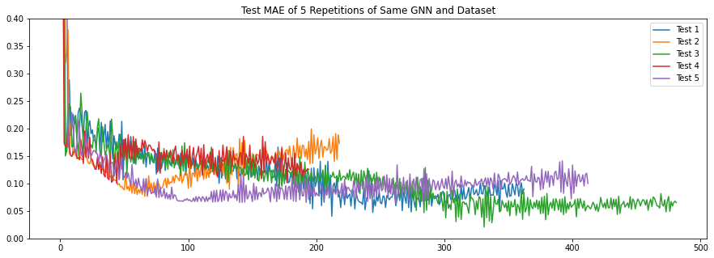
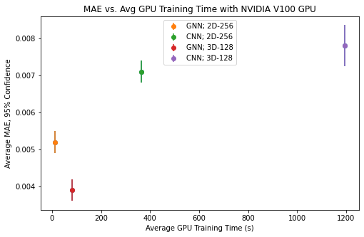
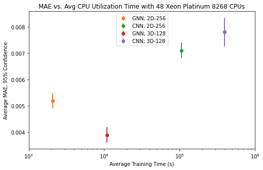
References
- Chen, L.-Q., Phase-field models for microstructure evolution. Annual review of materials research, 2002. 32(1): p. 113-140.
- Steinbach, I., Phase-field models in materials science. Modelling and simulation in materials science and engineering, 2009. 17(7): p. 073001.
- Zhu, J., et al., Three-dimensional phase-field simulations of coarsening kinetics of γ′ particles in binary Ni–Al alloys. Acta materialia, 2004. 52(9): p. 2837-2845.
- Kumar, N. and R. Mishra, Additivity of strengthening mechanisms in ultrafine grained Al–Mg–Sc alloy. Materials Science and Engineering: A, 2013. 580: p. 175-183.
- Stergiou, K., et al., Enhancing property prediction and process optimization in building materials through machine learning: A review. Computational Materials Science, 2023. 220: p. 112031.
- Ahmad, M.W., J. Reynolds, and Y. Rezgui, Predictive modelling for solar thermal energy systems: A comparison of support vector regression, random forest, extra trees and regression trees. Journal of cleaner production, 2018. 203: p. 810-821.
- Ward, L., et al., A general-purpose machine learning framework for predicting properties of inorganic materials. npj Computational Materials, 2016. 2(1): p. 1-7.
- Zhang, L. and S. Shao, Image-based machine learning for materials science. Journal of Applied Physics, 2022. 132(10).
- Li, X., et al., Predicting the effective mechanical property of heterogeneous materials by image based modeling and deep learning. Computer Methods in Applied Mechanics and Engineering, 2019. 347: p. 735-753.
- Shwartz-Ziv, R. and N. Tishby, Opening the black box of deep neural networks via information. arXiv preprint arXiv:1703.00810, 2017.
- Belle, V. and I. Papantonis, Principles and practice of explainable machine learning. Frontiers in big Data, 2021. 4: p. 688969.
- Kyriakos, A., et al. High performance accelerator for cnn applications. in 2019 29th international symposium on power and timing modeling, optimization and simulation (PATMOS). 2019. IEEE.
- Habib, G. and S. Qureshi, Optimization and acceleration of convolutional neural networks: A survey. Journal of King Saud University-Computer and Information Sciences, 2022. 34(7): p. 4244-4268.
- Scarselli, F., et al., The graph neural network model. IEEE transactions on neural networks, 2008. 20(1): p. 61-80.
- Reiser, P., et al., Graph neural networks for materials science and chemistry. Communications Materials, 2022. 3(1): p. 93.
- Husic, B.E., et al., Coarse graining molecular dynamics with graph neural networks. The Journal of chemical physics, 2020. 153(19).
- Dai, M., et al., Graph neural networks for an accurate and interpretable prediction of the properties of polycrystalline materials. npj Computational Materials, 2021. 7(1): p. 103.
- Li, G. and Y. Yu, Visual saliency detection based on multiscale deep CNN features. IEEE transactions on image processing, 2016. 25(11): p. 5012-5024.
- Ochoa, J.G.D. and F.E. Mustafa. Reliability of Saliency Methods Used in Graph Neural Network Models. in 2022 International Conference on Innovation and Intelligence for Informatics, Computing, and Technologies (3ICT). 2022. IEEE.
- Rappel, H., et al., A tutorial on Bayesian inference to identify material parameters in solid mechanics. Archives of Computational Methods in Engineering, 2020. 27: p. 361-385.
- Dose, V., Bayesian inference in physics: case studies. Reports on Progress in Physics, 2003. 66(9): p. 1421.
- Cahn, J.W. and J.E. Hilliard, Free energy of a nonuniform system. I. Interfacial free energy. The Journal of chemical physics, 1958. 28(2): p. 258-267.
- Kim, S.G., W.T. Kim, and T. Suzuki, Phase-field model for binary alloys. Physical review e, 1999. 60(6): p. 7186.
- Vignac, C., A. Loukas, and P. Frossard, Building powerful and equivariant graph neural networks with structural message-passing. Advances in neural information processing systems, 2020. 33: p. 14143-14155.
- Erickson, N., et al., Autogluon-tabular: Robust and accurate automl for structured data. arXiv preprint arXiv:2003.06505, 2020.
- Ardell, A. and R. Nicholson, The coarsening of γ'in Ni-Al alloys. Journal of Physics and Chemistry of Solids, 1966. 27(11-12): p. 1793-1794.
- Bois, F.Y., Bayesian inference. Computational Toxicology: Volume II, 2013: p. 597-636.
- Li, C., et al. Optimizing memory efficiency for deep convolutional neural networks on GPUs. in SC'16: Proceedings of the International Conference for High Performance Computing, Networking, Storage and Analysis. 2016. IEEE.
- Krill III, C.E. and L.-Q. Chen, Computer simulation of 3-D grain growth using a phase-field model. Acta materialia, 2002. 50(12): p. 3059-3075.
- Yan, W., et al., A novel physics-regularized interpretable machine learning model for grain growth. Materials & Design, 2022. 222: p. 111032.
- Montes de Oca Zapiain, D., J.A. Stewart, and R. Dingreville, Accelerating phase-field-based microstructure evolution predictions via surrogate models trained by machine learning methods. npj Computational Materials, 2021. 7(1): p. 3.